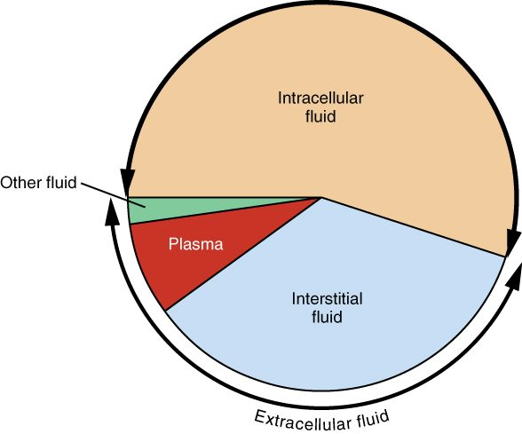
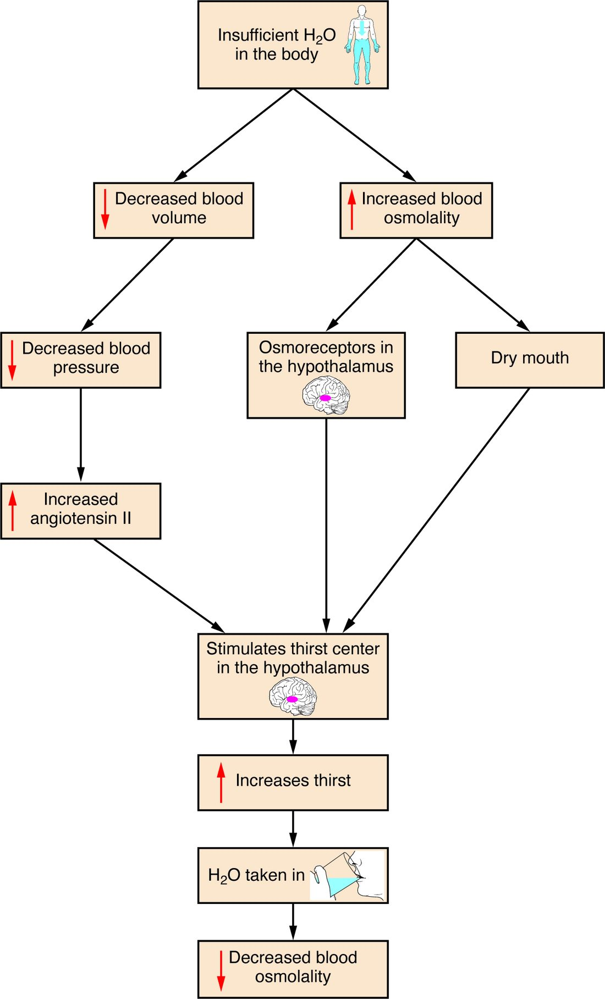

More than half of you is water, and almost none of it sits still. This page explains your body fluid compartments and water balance: how much water you carry, how it is split between the fluid inside your cells and the fluid outside them, what separates those compartments, how your daily water intake and output are matched, and how one feedback loop, built on thirst and antidiuretic hormone, holds the concentration of your plasma within about 1 to 2%. It ends with what happens when that balance fails: dehydration, loss or gain of fluid volume, and water intoxication.
How much water you carry
Weigh a lean 70 kg man, then imagine removing every drop of water from him. About 42 kg would go. That water is his total body water: all the water in the body, inside cells and out. In a young adult man it is about 60% of body mass; you met the rough figure of 50 to 60% in Water and solutions.
The share varies because tissues differ. Muscle is about three quarters water; fat tissue is closer to one tenth to one fifth. So anything that changes the ratio of fat to lean tissue changes the share:
- Infants: about 75%, falling through the first year.
- Adult women: about 50 to 55%, because on average they carry more fat for their weight.
- Older adults: about 45 to 50%, because muscle is lost with age.
- People with obesity: lower, for the same reason.
A lower share means a smaller reserve. The same loss of water is a larger fraction of what an older adult has.
The body fluid compartments
You met intracellular and extracellular fluid with the plasma membrane. That split is the first of the body fluid compartments: regions of body water separated by a barrier, each with its own volume and its own mix of solutes (com- = together, partiri = to divide). A fluid compartment is any one of them.
- The intracellular compartment is all the fluid inside all your cells, the intracellular fluid (ICF). It holds about two thirds of total body water. Every cell is its own small space, but their fluids are alike, so they are counted as one compartment.
- The extracellular compartment is all the fluid outside your cells, the extracellular fluid (ECF): the other one third. It has two main parts:
- Interstitial fluid, about three quarters of the ECF, bathes the cells.
- Plasma, about one quarter of the ECF, is the fluid part of blood.
A small extra volume, about 1 L, is sometimes counted separately as transcellular fluid: fluid made by epithelial cells into enclosed spaces, such as cerebrospinal fluid, the fluid in joints and serous cavities, and the fluid inside the eye. It is part of the ECF.
Figure 1 puts numbers on the compartments for a 70 kg man. A handy way to remember them is the 60–40–20 rule: total body water is about 60% of body mass, ICF about 40% and ECF about 20%.
Worked example 1: the compartments of one patient
Problem. A 60 kg woman has total body water equal to 50% of her body mass. Estimate her total body water, ICF, ECF, interstitial fluid and plasma volume. (1 kg of water is about 1 L.)
- Total body water. 0.50 × 60 kg = 30 kg, about 30 L.
- ICF. Two thirds of 30 L = 20 L.
- ECF. One third of 30 L = 10 L. Check: 20 + 10 = 30 L.
- Interstitial fluid. Three quarters of 10 L = 7.5 L.
- Plasma. One quarter of 10 L = 2.5 L.
Answer. About 30 L in all: 20 L inside cells and 10 L outside, of which 7.5 L is interstitial fluid and 2.5 L is plasma. Only about one twelfth of her body water is in her plasma.
Figure 2 shows the same split as a pie chart. Measured values vary with the method used, and this chart gives the ICF a little over half; for calculations, use two thirds.

What separates the compartments
Two barriers divide the compartments, and each lets different things through (Figure 3).
- Plasma membranes separate ICF from ECF. Water crosses them easily, through the bilayer and through aquaporins. Most ions do not: they cross only through channels and carriers, and the sodium–potassium pump keeps moving sodium out and potassium in. So the ICF and ECF have very different ion contents.
- Capillary walls separate plasma from interstitial fluid. Water and small solutes cross freely through the gaps between endothelial cells. Plasma proteins mostly do not. So plasma and interstitial fluid have almost the same ions, but plasma holds far more protein.

Compare the three fluids side by side in Figure 4. Its unit is the milliequivalent per liter (mEq/L), which counts charge: the millimoles of an ion times the size of its charge. For an ion with one charge, such as sodium, 1 mmol is 1 mEq.
![A bar graph of concentration in milliequivalents per liter, from 0 to 160, for seven solutes, each with three bars: intracellular fluid (tan), interstitial fluid (light blue) and plasma (red). Sodium is about 12 inside cells but about 143 in interstitial fluid and 150 in plasma. Chloride is about 5 inside cells and 110 to 117 outside. Bicarbonate is about 13 inside and 27 to 30 outside. Potassium is about 141 inside cells and 8 to 9 outside. Hydrogen phosphate is about 95 inside and about 5 outside. Magnesium is about 35 inside and about 3 outside. Protein is about 50 inside cells, about 2 in interstitial fluid and about 19 in plasma.](../figures/os-26-5.jpg)
| Intracellular fluid (ICF) | Extracellular fluid (ECF) | |
|---|---|---|
| Share of total body water | About two thirds | About one third |
| Volume in a 70 kg adult | About 28 L | About 14 L (10.5 L interstitial, 3.5 L plasma) |
| Main cation | Potassium, about 140 mmol/L | Sodium, about 140 mmol/L |
| Main anions | Phosphates and negatively charged proteins | Chloride, then bicarbonate |
| Magnesium | Higher | Lower |
| Protein | High | Moderate in plasma, low in interstitial fluid |
| What keeps it that way | The sodium–potassium pump and trapped proteins | The same pump, working from the other side |
| Osmolality | About 290 mOsm/kg | About 290 mOsm/kg |
Notice the last row. The fluids hold completely different solutes, yet their total particle counts match. Water crosses plasma membranes so easily that it moves until the osmolality inside every cell equals the osmolality outside. That gives you two rules for the rest of this page:
- Solutes set where water goes. Water follows the solutes a barrier holds back. Sodium, held outside cells by the pump, sets the volume of the ECF. Potassium and the other trapped solutes inside cells set the volume of the ICF.
- A change in ECF osmolality moves water across plasma membranes. If the ECF becomes more concentrated, water leaves cells and they shrink. If it becomes more dilute, water enters cells and they swell. This is tonicity, which you met in passive transport, acting on every cell at once.
Across capillary walls, by contrast, water moves by bulk flow driven by the Starling forces, as you saw in capillary exchange. When fluid collects in the interstitial fluid faster than the lymphatics return it, the result is edema.
Water intake and output
Your body water stays steady from day to day because what comes in matches what goes out. That is mass balance applied to water: water intake and output, the daily gains and losses of water that must add up to zero change.
Where water comes from
- Drinks: about 1.5 L a day in a typical adult.
- Food: about 0.75 L. Fruit and vegetables are mostly water.
- Metabolic water: about 0.25 L, made inside your cells. In the last step of cellular respiration, electrons are passed to oxygen, which picks up hydrogen ions and becomes water.
Where water goes
- Urine: about 1.5 L.
- Insensible water loss: about 0.7 L. "Insensible" (in- = not, sensibilis = perceptible) means you do not notice it. Water evaporates through the epidermis, separately from sweat, and water vapor leaves in every breath you exhale.
- Sweat: about 0.1 L on a cool, quiet day, but more than 1 L an hour in hard work in the heat.
- Feces: about 0.2 L.
Worked example 2: a daily water balance
Problem. Add up the typical values above. Is the person in balance? Then suppose they get a fever, which raises insensible loss by 0.4 L a day, and they do not drink any more. What happens to their body water over three days?
- Intake. 1.5 + 0.75 + 0.25 = 2.5 L a day.
- Output. 1.5 + 0.7 + 0.1 + 0.2 = 2.5 L a day.
- Balance. 2.5 − 2.5 = 0. Water in equals water out.
- With the fever. Output rises to 2.5 + 0.4 = 2.9 L a day, while intake stays at 2.5 L. Net change = 2.5 − 2.9 = −0.4 L a day.
- Over three days. 3 × −0.4 = −1.2 L, if nothing else changed.
Answer. Balanced at first; with the fever, a loss of about 1.2 L over three days. In practice the kidneys cut urine output and thirst raises intake, which is the subject of the next section.
Which routes are controlled
Most of these routes are not adjusted to keep water in balance. Insensible loss rises with fever, fast breathing, dry air and burns. Sweat is set by the body temperature loop, not by how much water you have. Metabolic water depends on how much fuel you burn. Only two routes are adjusted to match water: drinking, controlled by thirst, and urine volume, controlled by ADH.
Even urine has a floor. You met it in Concentrating the urine: you must excrete about 600 mOsm of waste solute a day, and your kidneys cannot make urine more concentrated than about 1,200 mOsm/L, so you pass at least about 0.5 L a day. That minimum, together with insensible loss, feces and sweat, is an obligatory loss of more than a liter a day. With no water intake at all, you lose water every day, whatever your kidneys do.
The plasma osmolarity feedback loop
Eat a salty meal and within an hour two things happen: you feel thirsty, and you pass less urine, darker than usual. Both come from one negative feedback loop. The plasma osmolarity feedback loop holds your plasma osmolality, the concentration of all dissolved particles in your plasma, near its set point of about 285 to 290 mOsm/kg, within a normal range of about 275 to 295. The loop controls water, not salt: it corrects concentration by adding or removing water.
You met each part with the hypothalamus and pituitary. Here is the loop in order (Figure 5):
- Stimulus. Plasma osmolality rises, because you lost water (sweat, breath, not drinking) or gained salt.
- Sensor. Osmoreceptors in the hypothalamus sense it. Water leaves them, following the solute outside, so they shrink and fire faster. They respond to a rise of 1 to 2%.
- Control center and efferent signals. The hypothalamus drives two responses. Its neurons release more ADH from the posterior pituitary into the blood. And the thirst center makes you feel thirsty.
- Effectors. ADH makes principal cells of the collecting ducts insert aquaporins, so water leaves the tubule into the salty medulla and returns to the blood. Thirst makes you drink.
- Response. Water is added to the plasma, from the kidneys and from drinking, and plasma osmolality falls back toward the set point. The osmoreceptors swell, fire less, and ADH and thirst switch off. The loop removes its own stimulus: negative feedback.
The loop runs the other way too. If you drink more water than you need, plasma osmolality falls a little, the osmoreceptors swell and fire less, ADH falls, the collecting ducts become nearly waterproof, and you pass a large volume of dilute urine.
ADH and thirst have different thresholds
ADH release begins to rise at a plasma osmolality of about 280 to 285 mOsm/kg. In most studies, thirst switches on at a slightly higher value. So for small, everyday rises, your kidneys correct the problem by saving water before you feel thirsty at all. Thirst takes over when the rise is larger, and it is the only response that can replace water already lost: the kidneys can slow loss, but they cannot make water.
Thirst also has other triggers, shown in Figure 6: a fall in blood volume and pressure, acting through angiotensin II, and a dry mouth. And it switches off within minutes of drinking, before the water is even absorbed, because sensory receptors in the mouth and throat report the swallowed water to the hypothalamus. That early shut-off stops you from drinking far more than you need while the first gulps are still in your stomach.

When volume overrides concentration
You saw in long-term blood pressure control that ADH has a second trigger: a fall in blood volume of roughly 5 to 10%, sensed by stretch-sensitive sensory receptors in the atria, large veins and arteries. Once that threshold is passed, ADH rises steeply. After a large bleed, ADH stays high even if plasma osmolality is normal or low, because volume wins. The kidneys then keep water even though the plasma is becoming dilute. This is why people who lose a lot of fluid and replace it only with plain water can end up with dilute plasma.
Worked example 3: drinking 2 L of water fast
Problem. A 70 kg man has 42 L of body water at an osmolality of 290 mOsm/kg. He drinks 2 L of plain water quickly, and it is absorbed before his kidneys excrete any of it. Estimate his new plasma osmolality, and where the water goes.
- Total solute. Osmolality × water = 290 mOsm/kg × 42 kg = 12,180 mOsm. Drinking water adds no solute, so this stays the same.
- New total water. 42 + 2 = 44 L.
- New osmolality. 12,180 ÷ 44 = 277 mOsm/kg.
- Where the water goes. Pure water crosses plasma membranes freely, so it spreads until every compartment has the same new osmolality. Each compartment gains in proportion to its size: two thirds (about 1.33 L) enters cells, and one third (about 0.67 L) stays in the ECF.
- How much reaches the plasma. One quarter of the ECF share: 0.67 ÷ 4 ≈ 0.17 L.
Answer. Plasma osmolality falls about 4.5%, to about 277 mOsm/kg. Most of the water ends up inside cells, which swell slightly, and only about 170 mL stays in the plasma. The fall is far larger than the 1 to 2% the osmoreceptors detect, so ADH release falls and, over the next few hours, the kidneys pass the extra water as dilute urine.
Where added or lost fluid goes
Worked example 3 used a general rule. What happens to fluid added to the ECF, or lost from it, depends on how its osmolality compares with the body's:
- Fluid with the same osmolality as plasma (isotonic, such as 0.9% saline, or the fluid lost in a bleed or in most diarrhea) changes only the ECF. Its sodium stays outside cells, so no water moves across plasma membranes. Within the ECF it is shared between plasma and interstitial fluid, roughly one quarter to three quarters at steady state.
- Pure water, or fluid with no lasting solute spreads through total body water: two thirds into cells, one third into the ECF.
- Fluid more concentrated than plasma (hypertonic, such as 3% saline) raises ECF osmolality, so water leaves cells and joins the ECF. The ECF grows by more than the volume given, and cells shrink.
Worked example 4: two IV fluids compared
Problem. A patient receives 1 L of 0.9% saline. Another receives 1 L of 5% glucose in water (D5W), which you met in passive transport: isosmotic in the bag, but its glucose is taken up and used by cells. How much of each liter ends up in the plasma?
- Saline, which compartments? Its sodium stays outside cells, so all 1,000 mL stays in the ECF.
- Saline, plasma share. One quarter of 1,000 mL = 250 mL in plasma; 750 mL in interstitial fluid.
- D5W, which compartments? Once cells use the glucose, 1,000 mL of free water remains, and it spreads through total body water: two thirds, about 667 mL, into cells, and one third, about 333 mL, into the ECF.
- D5W, plasma share. One quarter of 333 mL ≈ 83 mL.
Answer. About 250 mL of the saline stays in the plasma, but only about 83 mL of the D5W. That is why isotonic salt solutions, not D5W, are used to restore blood volume, while D5W is used to replace water.
Fluid imbalances
Fluid imbalances are disturbances of the volume of the body fluid compartments, their concentration, or both. They fall into four patterns, each with a different cause and a different effect on your cells (Figure 7).
Hypovolemia: isotonic fluid loss
Hypovolemia (hypo- = under, vol- = volume, -emia = blood condition) is a fall in ECF volume, including plasma volume, from losing salt and water together. Bleeding, diarrhea, vomiting, burns and heavy use of diuretics all cause it. Vomit and some kinds of diarrhea carry less salt than plasma, but most of these losses are close enough to plasma's osmolality that their main effect is on volume. Plasma osmolality stays about normal, so no water moves out of cells. The ECF alone shrinks. Blood pressure tends to fall, the heart speeds up, the RAAS switches on, and a large loss leads to hypovolemic shock.
Dehydration: water loss
Dehydration in the strict sense (de- = away, hydr- = water) is a loss of water greater than the loss of solute. Plasma osmolality rises, water leaves cells, and both compartments shrink, the ICF included. Causes include not drinking enough (common in older adults, whose thirst is blunted, and in anyone who cannot reach water), heavy sweating, fever, fast breathing and diabetes insipidus. The shrinking of brain cells explains the confusion and irritability of severe dehydration. Infants are especially at risk: they have a large surface area for their size, turn over a larger share of their body water each day, and cannot ask for a drink.
Overhydration and water intoxication: water gain
Overhydration is a gain of water greater than the gain of solute. Plasma osmolality falls, water enters cells, and all compartments swell. When the fall is large enough to cause symptoms, it is called water intoxication. Healthy kidneys can excrete roughly 0.7 to 1 L of water an hour, so it takes either drinking faster than that for hours, or kidneys that cannot let water go. Causes include:
- Drinking very large volumes quickly: in water-drinking contests, in some psychiatric illnesses, or in endurance events where runners drink far beyond their sweat losses.
- SIADH, which you met with the pituitary: ADH stays high although the plasma is dilute, so the kidneys keep water.
- Replacing heavy fluid losses with plain water while the volume trigger keeps ADH high.
The dangerous effect is on the brain. It sits inside the rigid skull, so swelling brain cells raise the pressure there quickly: headache, nausea and vomiting, confusion, then seizures, coma and death. Plasma sodium concentration falls in step with osmolality, and the next topic, Electrolyte balance, names and grades that fall.
Hypervolemia: isotonic fluid gain
Hypervolemia (hyper- = over) is an excess of ECF volume from keeping salt and water together. Heart failure, kidney failure, liver cirrhosis and too much IV isotonic fluid are the usual causes. Osmolality stays normal, so cells are unaffected, but the extra ECF raises capillary pressure. Fluid filters into the interstitial fluid faster than it drains: edema in the ankles and, when the left heart is failing, in the lungs. Blood pressure may rise, and the neck veins fill.
| Hypovolemia | Dehydration | Overhydration | Hypervolemia | |
|---|---|---|---|---|
| What is lost or gained | Salt and water lost together | More water lost than solute | More water gained than solute | Salt and water gained together |
| Plasma osmolality | Normal | High | Low | Normal |
| ECF volume | Down | Down | Up | Up |
| ICF volume (cell size) | Unchanged | Down: cells shrink | Up: cells swell | Unchanged |
| Typical causes | Bleeding, diarrhea, vomiting, burns, diuretics | Not drinking, sweating, fever, diabetes insipidus | Very fast drinking, SIADH | Heart failure, kidney failure, too much IV saline |
| Main danger | Low blood pressure and shock | Brain cells shrink: confusion | Brain cells swell: seizures | Edema, including in the lungs |
Fluid shifts
A fluid shift is a movement of fluid from one compartment to another without any change in the total. Some are harmless, like the water that enters cells after a glass of water. Others matter clinically. In a large burn or severe inflammation, leaky capillaries let plasma fluid and protein pour into the tissues. The fluid is still in the body, but it is out of the blood, so the patient can be hypovolemic and swollen at the same time. Fluid can collect the same way in body cavities, such as the peritoneal cavity. Clinicians sometimes call this "third spacing".
Putting it together: a large volume of water, fast
Maya, 22, enters a contest and drinks 4 L of water in an hour. Follow the loop:
- The water is absorbed and spreads through her total body water. Had none of it been excreted, her plasma osmolality would fall by about 9% (12,180 mOsm ÷ 46 L = 265 mOsm/kg), far past what her osmoreceptors detect.
- Her osmoreceptors swell and fire less. ADH release falls to almost nothing, and thirst is gone.
- Her principal cells pull their aquaporins back into vesicles, and her collecting ducts become nearly waterproof.
- She passes large volumes of urine at close to 50 mOsm/L.
- But her kidneys clear less than 1 L an hour, and she drank 4 L. For hours, water stays in her cells. Her brain cells swell, and she develops a headache, nausea and confusion.
Her loop worked perfectly. What failed was the rate: water came in faster than the kidneys' top speed.